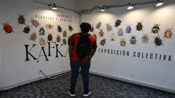

La gran obra de Kafka es vista a través de escarabajos
La exposición ‘De la idea a la obra. Metamorfosis, homenaje plástico y gráfico’ llega a México después de exhibirse en Praga, Viena y Berlín.
Un viaje sensorial invita a transitar entre la palabra y la forma, entre el sueño y la materia. Galería Iconos, del Instituto de Investigación en Comunicación y Cultura, y Área 7 organizan un homenaje a Franz Kafka en el que 100 escarabajos de papel, transformados por las manos de artistas de México, Chile, Estados Unidos y Francia, cobran vida para evocar el legado del escritor.
De la idea a la obra. Metamorfosis, homenaje plástico y gráfico a Kafka nació como un encuentro artístico de creadores, y después de conquistar Praga, Viena y Berlín, llega a Ciudad de México, explica Fernando Aroche Bello, artista visual y organizador de la exhibición.